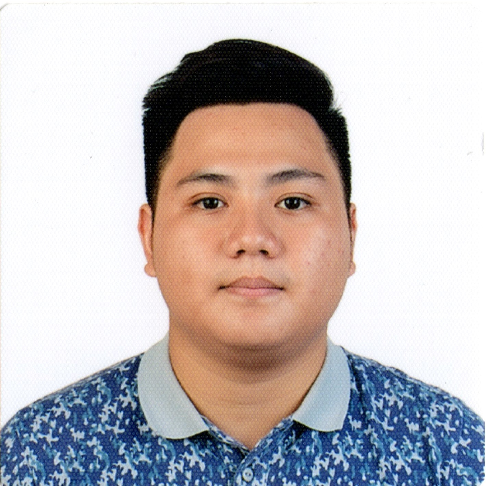

Experience
Northern Lights Technology Development Inc.
Cebu City, Philippines
Quality Assurance Engineer
August 2023 - Present
- Involved in the gathering and analysis of business requirements in order to create test plans and cases.
- Responsible for maintaining and updating test cases and test scripts.
- Responsible for performing functional and non-functional tests for multiple web-based applications/products, making sure that we achieve the target confidence rate before releasing.
- Involved in the reporting and monitoring of bugs and new features using a project management tool (JIRA).
- Involved in Database testing to ensure that data stored is correct and can be manipulated as expected.
Nexity Technologies
Cebu City, Philippines
Software Test Engineer (QA Team)
November 2020 - August 2023
- Involved in the gathering and analysis of business requirements in order to create test plans and cases.
- Responsible for maintaining and updating test cases and test scripts.
- Responsible for performing functional and non-functional tests for multiple web-based applications/products, making sure that we achieve the target confidence rate before releasing.
- Facilitated and carried out User Acceptance Tests in order to get feedback from an outside perspective.
- Designed and created multiple automated test suites for different web-based and android applications/products, as well as maintaining the scripts through regular code reviews.
- Designed and created multiple tools used by other members of the company aimed to make unifying requirement checking easier for everyone.
- Involved in the reporting and monitoring of bugs and new features using a project management tool (JIRA).
- Responsible for doing research and development for new technologies and tools, evaluating whether compatible with the team or not. Would then share what is learned with the team and management.
- Involved in actively analyzing company processes and tools, presenting ideas on how to make it easier for the team and the company as a whole.
- Tasked to give regular monthly training to the team and other members of the company related to Software Testing.
- Responsible for gathering and summarizing team feedback to be used on regular performance reviews.
- Underwent Back-end training to improve and develop white-box testing techniques.
- Part of a team formed to organize team building exercises and other activities to improve camaraderie within the different teams.
Symph Co.
Cebu City, Philippines
QA Intern
April 2019 - June 2019
- Learned the foundations of Quality Assurance and Software Testing.
- Immersed in the testing of multiple software products, both manually and using test scripts.
- Involved in the reporting and monitoring of bugs. Exposed to multiple training related to project management, coding, UI/UX, and soft skills.
- Created an end-to-end automated test suite for a project using Selenium from scratch as my final task for my internship.
Education
University Of San Carlos
Cebu City, Philippines
Bachelor of Science in Computer Engineering
With Software Development Elective
2015 - 2020
Candelaria Institute of Technology
Cabadbaran City, Philippines
High School
2011 - 2015
Candelaria Institute of Technology
Cabadbaran City, Philippines
Elementary
2005 - 2011